examples.rmdivDiag is a package for uncertainty quantification and sensitivity analysis for IV designs that provides R implementations of the guidelines proposed in Lal et al (2021).
The package provides functions to compute (block-)bootstrapped standard errors, F-statistics, and weak-IV robust confidence intervals as well as the Local-to-Zero estimator (Conley, Hansen, and Ross 2012). Estimation routines in ivDiag always return lists that can be sliced and appended to additional rows in tables produced by modelsummary, fixest::etable and stargazer etc.
This package is a work in progress. Github issues and/or pull requests are welcome.
library(ivDiag); library(ggplot2)
# %% Meredith (2013) APSR data
df <-readRDS("../tmp/apsr_Meredith_2013.rds")
Y <- "DemShareDB"; D <- "DemShareGOV"; Z <- "HomeGOV"
controls <- c("HomeDB")
cl <- "fips"
FE <- c("fips","RaceID")
weights <- "Weight"
# %% first stage F statistics
fst = first_stage_tests(data=df, Y=Y, D=D, Z=Z, controls=controls, FE =FE,
cl=cl, weights=weights, boot = T, nboot = 100)## Bootstrapping:
## Parallelising 100 reps on 7 cores
fst |> print()## $F_stat
## F.standard F.robust F.cluster F.boot F.AR
## 186.0359 94.9238 76.0563 76.9577 9.3432
##
## $p_iv
## [1] 1
##
## $N
## [1] 14562
##
## $N_cl
## [1] 2756
##
## $rho_DZ
## [1] 0.1255
##
## $AR.ci
## lower upper
## [1,] 0.08260178 0.3403842
##
## $AR.ci_inf
## [1] "[0.083, 0.34]"
bootres=boot_IV(data=df, Y=Y, D=D, Z=Z, controls=controls, FE = FE,
cl=cl, weights=weights, nboot = 100)## Bootstrapping:
## Parallelising 100 reps on 7 cores
## Bootstrap took 21.360 sec.
bootres |> print()## $est_ols
## Coef SE.t SE.b CI.b 2.5% CI.b 97.5%
## 0.4387 0.0079 0.0124 0.4150 0.4630
##
## $est_2sls
## Coef SE.t SE.b CI.b 2.5% CI.b 97.5%
## 0.2163 0.0650 0.0766 0.0660 0.3470
##
## $F_stat
## F.standard F.robust F.cluster F.boot
## 186.0359 94.9238 76.0563 75.8787
##
## $p_iv
## [1] 1
##
## $N
## [1] 14562
##
## $N_cl
## [1] 2756
##
## $rho_ZD
## [1] 0.1255
##
## $sens_rho_Ze
## thresh_pt_est thresh_signif sig_D sig_e
## 0.0319 0.0097 0.0414 0.0352Fork of ivmodel::AR.test that uses felm to partial out and fit the IV regression instead of AER and can fit larger models.
## $Fstat
## [1] 9.343229
##
## $df
## [1] 1 11633
##
## $p.value
## [1] 0.002243184
##
## $ci
## lower upper
## [1,] 0.08260178 0.3403842
##
## $ci.info
## [1] "[0.083, 0.34]"Example from guiso sapienza & zingales 2016.
library(ivDiag); library(magrittr); library(patchwork); library(ggfortify); library(lfe)
source("../R/utils.R")
load('../tmp/GSZ2016.rds')
# formula
f = formula_lfe('totassoc_p',
X = c('altitudine', 'escursione', 'costal', 'nearsea', 'population', 'pop2', 'gini_land', 'gini_income' ),
W = 'libero_comune_allnord', Z = "bishopcity")
# vanilla clustered fit
m1 = felm(f, data = gsz_2016, weights = gsz_2016$population) |> robustify()
# bootstrap fit - this can also be done using `boot` with the corresponding ivreg / fixest call
m2 = felm(f, data = gsz_2016, weights = gsz_2016$population,
Nboot = 1000, nostats=structure(FALSE,boot=TRUE))
iv_boots = m2$boot["`libero_comune_allnord(fit)`", ]
zfs_prior # estimate in ZFS south sample - saved in processing## bishopcity
## 0.1778017
ltz_est = ltz(gsz_2016_residualised, "W", "Z", mu = zfs_prior, sig = 0.1, ivmod = m1)
ltz_est |> print()## $est
## [,1]
## [1,] 3.60948
##
## $se
## [,1]
## [1,] 1.257287
##
## $ci
## [1] 1.145244 6.073716viz_iv_dists expects (iv_estimate, bootstrap_draws, ltz_estimate) and returns a list of ggplot objects with the corresponding sampling distributions. These can then be wrapped into a single figure using patchwork or gridExtra. Here, we use patchwork::wrap_plots to stack them.
analytic_est = m1 %>% summary %>% .$coefficients %>% .[nrow(.), ] %>% .[1:2]
viz_iv_dists(analytic_est, iv_boots, ltz_est) %>% wrap_plots(nrow = 3)